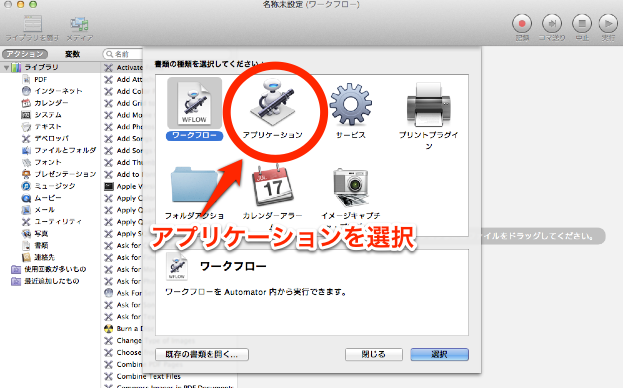
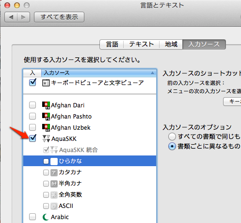
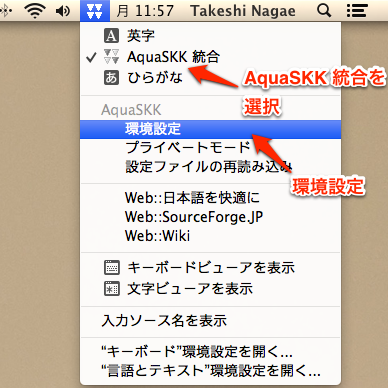
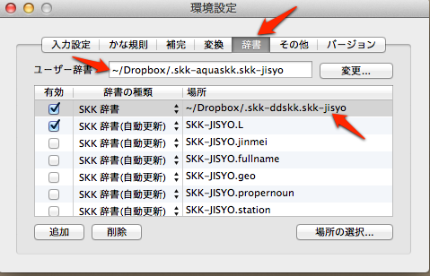
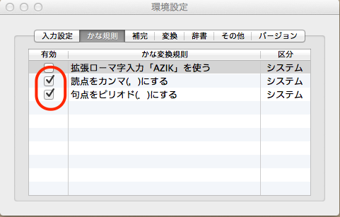
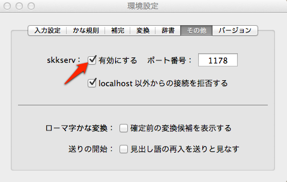
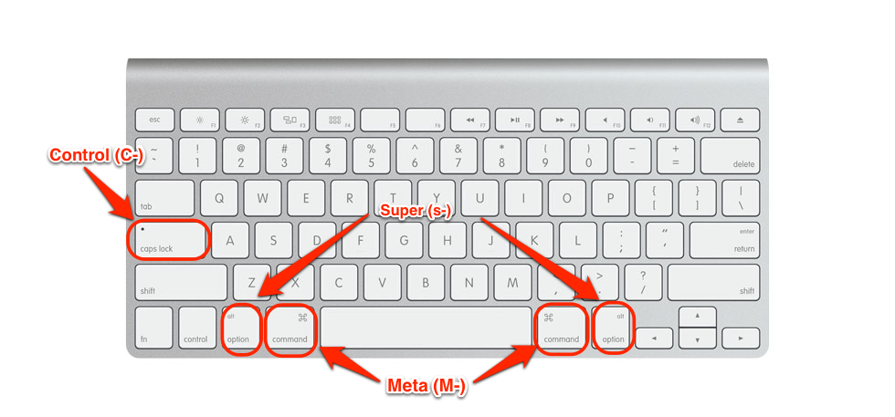
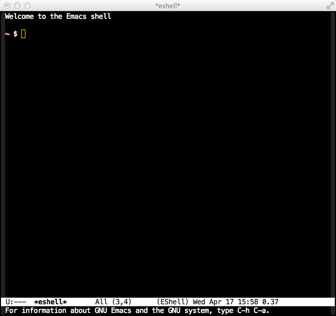
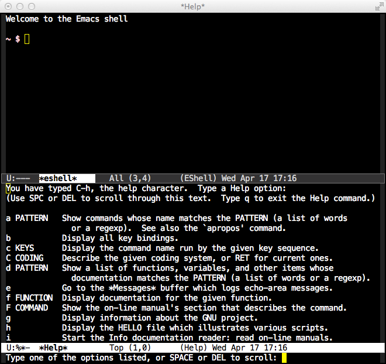
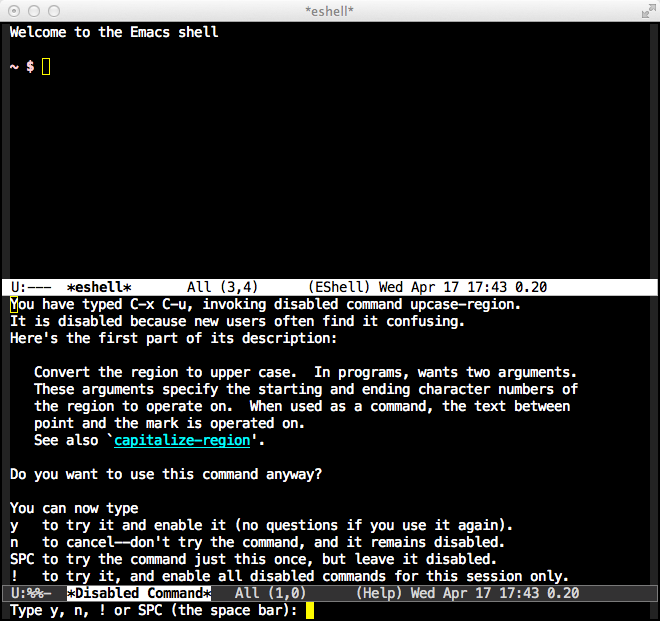

ITL/Emacs — 最強のエディタ
目次
1 Emacs のインストール方法
- 本体および関連するパッケージを Homebrew でインストール
ターミナルで以下を実行
brew cask install emacs # 最強のエディタ brew install skktools # 日本語入力 SKK
- Spotlight で呼び出せるように Automator でアプリケーションとして登録
Automator.app を起動し，メニューから「アプリケーション」を選択

- 検索窓に「シェルスクリプトを実行」と入力
- 「シェルスクリプトを実行」と書かれたアイコンをダブルクリック
デフォルトで
catと書かれたシェルスクリプトを以下に変更：open -a /Applications/Emacs.app
- ファイル名を
Emacs.appとして iCloud フォルダに保存する
2 長江研 Emacs 設定方針
Emacs は初期設定ファイル(~/.emacs.d/init.el)が極めて重要な役割を果たす[1]．同じ
Emacs を使っていても，初期設定ファイルが違うと全く違うアプリケーションのように感
じる．そのため，マシンごとに別々の初期設定ファイルを用いると，複数のマシンで作業
する(eg. 研究室の作業を自宅で引き継ぐ)際に作業効率が著しく低下する．そこで，以下
では，次のポリシーに従った設定方法を述べる：
- 環境変数や homebrew のパスなど，マシン固有の設定はローカル上の
~/.emacs.d/init.elに記述 - それ以外の初期設定ファイルは Dropbox上の
~/Dropbox/.emacs.d/以下に置く - ELPA(Emacs Lisp Package Archives)を積極的に利用．通常，これらのファイルはローカルの
~/.emacs.d/elpa/以下に置かれるが，ここでは，これをDropbox 上の~/Dropbox/.emacs.d/elpaへのシンボリックリンクとして設定． - ELPAでインストールできないlispファイル群は Dropbox 上の
~/Dropbox/.emacs.d/lisp以下に置く．
[1] .emacs.d のように先頭に . のついたファイルやフォルダは隠しファイル/隠しフォ
ルダであり，普段はFinder や ls コマンドで見ることはできない．これらを見るには，
ターミナルから以下のように入力する：
$ ls -a ~/
2.1 Emacs の初期設定
ローカルの初期設定フォルダを作成：
$ mkdir ~/.emacs.d/
~/.emacs.d/init.elを以下のように設定する：なお，上記ファイルは以下の手順でダウンロードすることも可能：
$ cd ~/.emacs.d $ curl -O https://gist.github.com/nagae/5269225/raw/init.el
curl -O fooは指定されたインターネット上のファイルを同じ名前で現在のディレクトリに保存するコマンド．- リポジトリからDropbox 上に設定ファイルを読み込む：
Bitbucket と Github に SSH 公開鍵アクセスが可能か調べる
$ ssh git@bitbucket.org PTY allocation request failed on channel 0 conq: logged in as ***. You can use git or hg to connect to Bitbucket. Shell access is disabled. Connection to bitbucket.org closed.
You can use git or hg to connect to Bitbucket.と表示されれば OK.$ ssh git@github.com PTY allocation request failed on channel 0 Hi ****! You've successfully authenticated, but GitHub does not provide shell access. Connection to github.com closed.
Hi ****! You've successfully authenticatedと表示されればOK(****は Github.com のアカウント名)．- アクセスできない場合は以下の手順を試してみる：
- Github / Bitbucket に SSH で接続する の設定を確認
~/.ssh/known_hostからgithub.comやbitbucket.orgを含む行を削除する秘密鍵を指定してSSHでアクセスしてみる: 具体的には，ターミナルから以下を入力
$ ssh -i ~/.ssh/id_rsa git@bitbucket.org $ ssh -i ~/.ssh/id_rsa git@github.com
Bitbucket / Github にアクセスできることを確認したら，ターミナルから以下を実行：
$ cd ~/Dropbox/ $ git clone --recursive git@bitbucket.org:nagae/.emacs.d.git
Dropbox のlisp用フォルダへのシンボリックリンクをローカルの設定フォルダ
~/.emacs.d/に置く：$ ln -s ~/Dropbox/.emacs.d/elpa ~/.emacs.d # Dropbox上の elpa フォルダへのシンボリックリンクを張る
2.2 初期設定ファイルの更新
上記の初期設定ファイルは適宜更新される．更新を反映するにはターミナルから以下を実行する：
$ cd ~/Dropbox/.emacs.d $ git pull
lisp/spacesなど，一部の lisp は別のリポジトリを(submodule として)取り込んでいるので，以下で最新のものに更新できる(はず)：$ cd ~/Dropbox/.emacs.d $ git submodule update --init --recursive $ git submodule update --recursive
--initオプションをつけると初期化のみを行うようです(参考)．git pullあたりでどうにもうまく行かないときは，=~/Dropbox/.emacs.d= 自体を clone し直してみる：$ cd ~/Dropbox # ~/Dropbox に移動 $ mv .emacs.d .emacs.d.backup # .emacs.d を別名で退避 $ git clone --recursive git@bitbucket.org:nagae/.emacs.d.git # 最新版を clone
後は
.emacs.d.backupの中身を適宜.emacs.dに書き写していけばいい
3 SKK / AquaSKK — シンプル漢字かな入力
長江は「ことえり」や「IME」のような形態素解析をベースとした入力メソッドが苦手なので，SKK(Simple Kana to Kanji conversion program)を利用している． SKK は品詞解析を行なわないため，漢字にする箇所や送り仮名を自分で指定する必要がある．しかし，ひとたび慣れれば高速かつ直感的な入力が可能となる———上述のような入力メソッドが使えなくなるほど． Macの標準入力方式に代替できる AquaSKK (旧サイト)と Emacs 上で動く DDSKK (Daredevil SKK) とがあり，両方併用するのが吉．
3.1 DDSKKのインストール
- Emacs の package に MELPA を入れておけば,
M-x package install [RET] ddskkでインストール可能になった.
3.2 AquaSKKのインストール
brew caskでインストールできるようになっている:brew cask install aquaskk
- 言語環境に AquaSKK を登録
- 画面左上のリンゴマーク→システム環境設定→言語とテキスト

- 入力ソースで Aqua SKK 統合にチェック 
- 画面左上のリンゴマーク→システム環境設定→言語とテキスト
- AquaSKK の環境設定
右上の入力方式から AquaSKK 統合を選択した上で「環境設定」を選択

- 辞書ファイル
- ユーザー辞書:
~/Dropbox/.skk-aquaskk.skk-jisyo - SKK辞書:
~/Dropbox/.skk-ddskk.skk-jisyo
- ユーザー辞書:
- その他
- かな規則：「読点をカンマ(，)にする」「句点をピリオド(．)にする」にそれぞれ チェック． 
- skkserv:「有効にする」にチェック，ポート番号:1178 
- 辞書ファイル
4 基本的な操作方法
4.1 特殊キー
上記の設定の下では，Emacs で用いる特殊キーは以下のように割当てられる．
| 特殊キー名 | 省略表記 | キーボード上のキー |
|---|---|---|
| Control | C- | caps lock |
| Meta | M- | command (⌘) |
| Super | s- | option (alt) |
| Return | RET | return (enter) |
| Tab | TAB | tab |
| Delete | DEL | delete |
| Esc | ESC | esc |

以降では，caps lock を「Control キー」，command (⌘) を「Meta キー」，option(alt) を「super キー」と呼ぶことにする．
4.2 同時押しと順次押し
Emacs では，特殊キーとそれ以外のキーの組み合わせ(キーバインド)によって多彩な操作が可能である． 全てのキー操作は「同時押し」と「順次押し」で構成される．
- 同時押し
- 特殊キーとそれ以外のキーを 同時 に押すこと．ハイフン(-)で表現される．
C-g- Control と g を同時に押す
M-x- Meta と x を同時に押す
C-x-n- Control と Meta と n を同時に押す
- 順次押し
- あるキーや同時押しの 後で, 別のキーや同時押しを入力すること．空白記号で区切って表現される．
C-x C-s- C-x の後で C-s を入力する
M-x info- M-x の後で「info」と入力する
C-x RET f- C-x, リターンキー, f の順に入力する
特殊キーと
4.3 まずはパニック対応(ESC, C-g)
操作中に予期せぬ画面になってしまった時は，=ESC= か C-g (Control と g の同時押し)を押すことで，大抵，元の画面に戻ってこれる．
Emacs を起動すると，最初はこのような画面(eshell)が現れるはずだ．

C-h C-h(Controlキー と h の同時押しを2回)を入力する．こんな画面になってしまう

- 慌てずに
ESCを押せば，元の画面に戻る． - 今度は
C-x C-u(Control キーと x の同時押しの後，Control と u の同時押し)を入力する． こんな画面になるはずだ

- この画面は
ESCを入力しても消えてくれない．そんな時も慌てずC-gを入力すれば，元の画面に戻る．
4.4 カーソルの操作
Emacs では，十字キーではなく，キーバインドでもカーソルを操作できる．最初は十字キーの方が楽なように思うだろうが，慣れてくると十字キーに手を伸ばすのが億劫になってくるはずだ．最初の画面(eshell)で色々試してみよう．
| キーバインド | 動作 |
|---|---|
C-f |
カーソルを右(前)へ |
C-b |
カーソルを左(後)へ |
C-n |
カーソルを下(次の行)へ |
C-p |
カーソルを上(前の行)へ |
C-a |
カーソルを行の先頭へ |
C-e |
カーソルを行の末尾へ |
M-f |
カーソルを1単語右(前)へ |
M-b |
カーソルを1単語左(後)へ |
C-v |
カーソルを1画面下(次の画面)へ |
M-v |
カーソルを1画面上(前の画面)へ |
M-< |
カーソルをバッファの先頭へ |
M-> |
カーソルをバッファの末尾へ |
DEL |
カーソルの 前 の1文字を消去 |
C-d |
カーソルの 後 の1文字を消去 |
5 参考資料
順次書いていきますが膨大なので，まずは Emacs 実践入門 の§2.3以降を読みながら各自で慣れていって下さい．
6 独自設定
https://bitbucket.org/nagae/.emacs.d で公開している設定ファイルでは， Emacs 実践入門 に記載されていないような独自のキーバインドがいくつかある．
6.1 基本操作
- ウィンドウの切り替え(
C-;) C-x oだけでなくC-;でもウィンドウが切り替えられる．- 指定行への移動(
M-g) M-x goto-lineをM-gだけで起動できる- バッファ切り替え(
C-x b) C-x bで iswitchb を起動できる．カーソルの左右とC-f, C-bで次のバッファ/前のバッファを選択できる．- 前後のバッファへの瞬時切り替え(
C-<, C->) - バッファ切り替えを立ち上げなくても
C-<で前のバッファ，C->で後のバッファに切り替えられる
6.2 Anything
s-a(option キーと a の同時押し)s-aでanything-for-files を起動
6.3 もっとある
便利な独自機能はまだ沢山あるが鋭意執筆中．